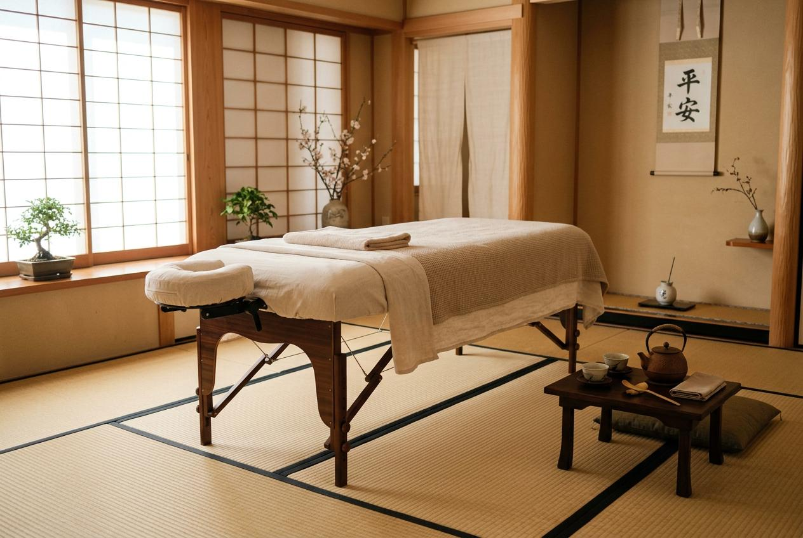

在台北生活節奏緊湊，長時間通勤與高強度工作讓身體容易累積疲勞。台北男士到府按摩推薦怎麼選？本文整理到府按摩的服務項目、預約流程與價格參考，幫助你快速找到適合自己的按摩服務。
為什麼男士會選擇按摩服務？
許多男士每天長時間坐在辦公桌前，肩頸與背部肌肉長期處於緊繃狀態。久坐不動會讓血液循環變差，肌肉僵硬感逐漸累積，到了下午或晚上特別明顯。運動愛好者也有類似困擾，高強度訓練後如果沒有適度放鬆，肌肉痠痛可能持續好幾天。按摩服務可以針對這些部位進行處理，讓身體回到較為輕鬆的狀態，是許多人選擇定期按摩的主要原因。
台北男士到府按摩推薦常見服務項目
到府按摩提供的項目會依店家而有所不同，以下是常見的服務類型：
- •肩頸按摩：針對長時間使用電腦、低頭看手機造成的肩頸僵硬進行處理。
- •全身肌肉按摩：涵蓋背部、腰部、腿部等全身主要肌群，適合想要整體放鬆的人。
- •運動後肌肉按摩：針對運動後緊繃的肌群進行深度處理，幫助肌肉恢復彈性。
- •久坐族肩背按摩：專注於上背部與肩胛區域，緩解辦公族常見的背部緊繃問題。
台北男士按摩服務流程怎麼安排？
到府按摩的預約流程通常分為以下幾個步驟：
- 線上或電話預約：透過官網或電話聯繫店家，說明你的需求。
- 確認項目與時段：選擇想做的按摩項目與預約時間，雙方確認行程。
- 確認地點：提供正確的地址資訊，讓師傅能準時到達。
- 服務前溝通：按摩開始前與師傅說明身體狀況，例如哪些部位特別緊繃。
- 服務後保養建議：按摩結束後，師傅可能會提供日常保養的簡單建議。
台北男士按摩價格通常怎麼看？
到府按摩的價格會受到多個因素影響。首先是服務時間長度，60分鐘與90分鐘的費用自然不同。其次是到府距離，師傅需要從出發地前往你的位置，距離較遠可能會反映在價格上。另外，門市按摩與到府服務的定價結構也不同，到府服務通常會包含交通成本。預約時機與服務時段也可能影響最終費用。
| 價格因素 | 說明 | 影響程度 |
|---|---|---|
| 服務時間 | 60分鐘、90分鐘或120分鐘，時間越長費用越高 | 高 |
| 到府距離 | 師傅從出發地到你的位置的距離遠近 | 中 |
| 門市 vs 到府 | 到府服務通常包含額外的交通成本 | 中 |
| 預約時機 | 臨時預約與提前預約的價格可能不同 | 低 |
| 服務時段 | 平時與假日的價格可能有差異 | 低 |

台北男士按摩推薦怎麼選？
挑選到府按摩服務時，可以從以下幾個面向評估：
- •項目說明：確認店家提供的服務內容與說明是否完整。
- •價格確認：預約前了解完整的收費方式，避免產生誤會。
- •預約管道：選擇有明確聯繫方式的店家，方便後續溝通。
- •網站資訊：瀏覽店家網站，了解其服務項目與基本介紹。
到府按摩與門市按摩有什麼差別？
到府按摩明顯的優點是省去交通時間，按摩結束後可以直接休息。不過，到府服務的環境是你熟悉的家裡，需要自己準備適合的空間。門市按摩則有專業的環境與設備，但結束後還需要通勤回家。費用方面，到府服務通常會比門市略高一些，因為包含師傅的交通成本。適合選擇到府的人包括：時間有限、不方便外出、或偏好在家裡放鬆的族群。
預約前需要注意哪些事項？
為了讓按摩體驗更順利，預約前建議確認以下幾點：
- 1.準備安靜、整潔的空間，讓師傅有足夠的工作區域。
- 2.確認自己的身體狀況，如有特殊情況應提前告知。
- 3.提前了解取消或改期的相關規定。
- 4.確認服務項目與時間長度是否符合自己的需求。
- 5.保持手機暢通，方便師傅到達前聯繫。
選擇按摩服務的重點整理
選擇到府按摩服務時，建議先了解自己的需求，再對照店家的項目與流程說明。確認價格結構、預約方式與注意事項後再做決定。金手指按摩提供台北地區到府按摩服務，歡迎瀏覽網站了解更多服務資訊，或直接預約體驗。
常見問題
到府按摩需要準備什麼？
建議準備一個安靜、整潔且有足夠空間的區域，讓師傅可以順利進行服務。可以準備一條大毛巾鋪在床上或地板上，並確保室內通風良好。如果有特別喜歡的音樂，也可以提前播放。
到府按摩的價格通常是多少？
到府按摩的價格會依服務時間、項目內容與距離而有所不同。一般來說，60分鐘的服務價格會低於90分鐘。建議直接詢問店家，了解完整的收費方式，確認沒有隱藏費用後再預約。
可以臨時預約到府按摩嗎？
部分店家接受臨時預約，但建議至少提前一天預約，以確保能安排到適合的時段。熱門時段如週末晚上通常較容易額滿，提前預約比較保險。
到府按摩跟門市按摩哪個比較好？
兩者各有優點。到府按摩省去交通時間，結束後可以直接休息；門市按摩則有專業環境與設備。選擇哪一種取決於你的個人需求與生活型態，時間較少或偏好在家放鬆的人適合到府服務。
按摩前後有什麼需要注意的？
按摩前建議避免空腹或剛吃飽的狀態，最好間隔一小時以上。按摩後建議多喝溫水，幫助身體代謝。當天避免劇烈運動，讓身體有時間恢復。如果感到任何不適，應立即告知師傅。
標籤： 台北男士到府按摩推薦台北男士到府按摩推薦怎麼選到府按摩服務到府按摩流程按摩價格